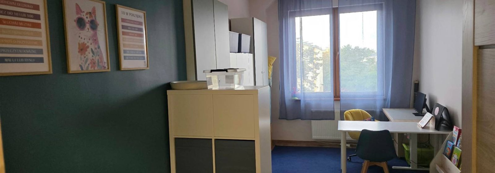

Oferta
Prowadzę zajęcia specjalistyczne rozwijające umiejętności komunikacyjne przy pomocy metod AAC — czyli takich, które umożliwiają porozumiewanie się osobom nieposługującym się mową werbalną albo używającym jej w ograniczonym stopniu.

Punkt wyjścia dla całej dalszej pracy. Sprawdzam, jak dziecko porozumiewa się dziś — także wtedy, gdy nie mówi ani słowa.
Nie ma jednego AAC dla wszystkich. System dobieramy pod konkretną osobę — jej możliwości ruchowe, poznawcze, percepcyjne i motywacyjne.
Wykonuję je sama, zgodnie z potrzebami konkretnego użytkownika.
Dla osób, dla których symbole na papierze to za mało albo za wolno.
Jako uzupełnienie terapii logopedycznej, nie zamiast niej. AAC nie blokuje rozwoju mowy — badania wykazują, że w wielu przypadkach wspiera budowanie systemu językowego.
Stymulowanie rozwoju poznawczego i nauka czytania z wykorzystaniem wizualnych technik wspierających komunikację i rozumienie.
Dla dzieci, u których trudne zachowania wiążą się z zaburzeniami komunikacji i brakiem mowy, a także z kłopotem w respektowaniu norm i zasad społecznych.
Najlepszy system komunikacji jest bezużyteczny, jeśli nikt w otoczeniu dziecka nie umie z niego korzystać. Uczę rodziców, rodzeństwo i nauczycieli, jak tworzyć środowisko sprzyjające komunikowaniu się i jak korzystać z narzędzi komunikacyjnych.
Spotkanie bez dziecka — to czas na pytania i odpowiedzi, omówienie kolejnego etapu terapii, przekazanie zaleceń. Także dla nauczycieli, którzy mają w grupie dziecko niemówiące i nie wiedzą, jak zacząć i jak wspierać rozwój jego kompetencji komunikacyjnych i społecznych.
Opisz krótko, co dzieje się z Twoim dzieckiem. Odezwę się i wspólnie ustalimy, od czego zacząć.
Umów konsultację